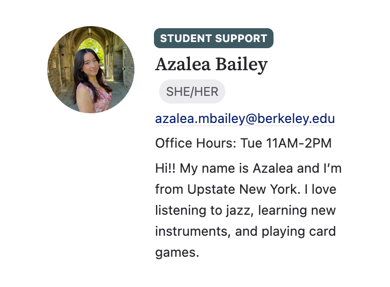
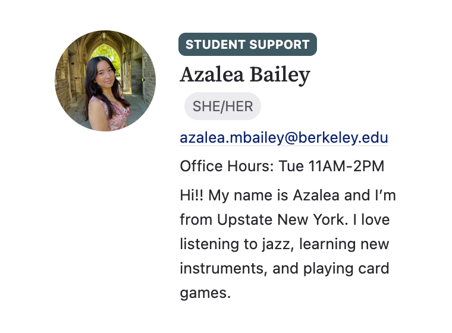

Upstate Roots and the Hudson
I grew up near the Hudson River in Upstate New York. I spent a lot of time outside, helping with environmental projects and learning to notice small details. Only later did I realize that I was already bumping into data science. I just did not have the words or tools yet.
Seed Scholars and Starting Early
At UC Berkeley I joined the Seed Scholars Honors Program, a community that supports students who are often underrepresented in STEM. It gave me mentors, confidence, and an early start on campus.
Learning Data Science and Paying It Forward
My first real step was Data 6, where I wrote my first lines of code. That led to Data 8 and Data 100. I began to see how careful thinking, a bit of math, and good questions could turn messy information into something useful. I wanted other students to feel that click, so I tutored and then became a teaching assistant (TA).


 

Research and Askademia
As a Data 100 TA I joined research with Professor Narges Norouzi. Together we built Askademia, a real time AI system that helps answer student questions. Our paper received Best Paper at AIED.

Into Industry at Autodesk
Research opened the door to AI agents, which led to a Machine Learning Engineer internship at Autodesk. I worked on agentic systems for real teams, and I learned how to ship things that people actually use.
Service and Music
At the same time I joined a nonprofit consulting club. I grew up playing trumpet, so getting to support music organizations felt natural and meaningful. It reminded me how much I like building things that help communities.
Studying Abroad in Italy
Right now I am in Italy taking art classes and applying to roles. I am learning a lot, traveling a bit, and staying open to what comes next.
Making Things and Sharing Work
Whether it is code, curriculum, or prints, I like turning ideas into something you can hold or try. I want more of that in my career.
What I Am Exploring Next
I am looking for roles where I can connect AI, product thinking, and learning. I care about clear explanations, useful tools, and teams that like to build.